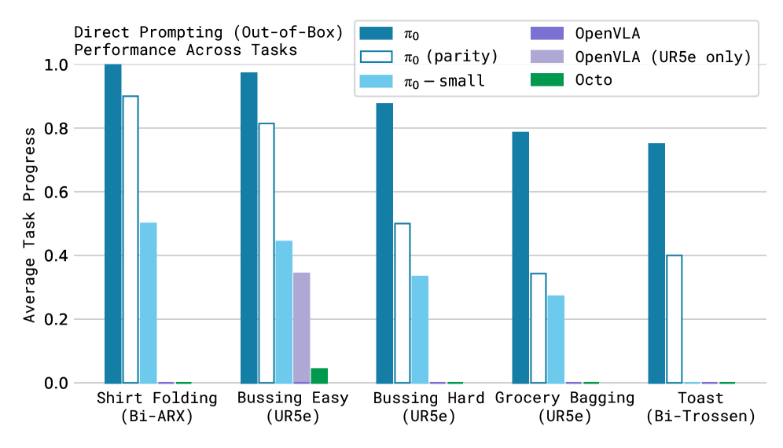

π0: A Vision-Language-Action Flow Model for General Robot Control
한 줄 요약 (TL;DR)
사전학습 VLM(PaliGemma 3B)에 flow matching action expert(약 300M, 총 3.3B)를 결합해 7종 로봇·68개 태스크·약 10,000시간(903M timestep) 데이터로 학습한 범용 VLA. H=50 스텝 action chunk를 10회 적분으로 연속 예측해 50Hz 제어를 지원하며, 셔츠 개기·식탁 치우기 등 out-of-box 태스크에서 OpenVLA·Octo를 큰 폭으로 앞서고 세탁물 접기 같은 복잡한 다단계 태스크에서 50% 이상의 점수를 달성.
1배경 · 문제의식
로봇 학습의 핵심 난제는 데이터 효율·일반화·강건성이다. 인터넷 규모 지식을 가진 VLM은 의미 이해에 강하지만, 로봇 제어에 필요한 고빈도·고자유도의 연속 액션을 정밀하게 출력하지 못한다. 기존 VLA(OpenVLA 등)는 액션을 이산 토큰으로 자기회귀 생성해 action chunking과 고주파 제어에 취약하고, diffusion policy 계열(Octo)은 표현 용량이 제한적이다. 저자들은 사전학습 VLM의 의미 지식과 flow matching 기반 연속 액션 생성을 결합해, 단일 모델로 단일팔·양팔·모바일 매니퓰레이터를 아우르는 범용 정책(generalist policy)을 구축하고자 한다.
2핵심 Contribution
- Flow matching action expert를 얹은 VLA 아키텍처 — 사전학습 VLM(PaliGemma)에 별도 가중치의 action expert(≈300M)를 붙여 연속 action chunk를 flow matching으로 생성. 이산 토큰화 없이 고빈도·고자유도 제어를 지원.
- 대규모 교차 임베디먼트 사전학습 — 7종 로봇 구성·68개 태스크·약 10,000시간(903M timestep)의 자체 데이터 + OXE/Bridge v2/DROID를 통합 학습. "로봇 데이터 양 기준 역대 최대 규모 실험"이라 주장.
- Zero-shot·언어추종·파인튜닝 전반 검증 — 사전학습 후 out-of-box 수행, 언어 지시 추종, 신규 태스크 파인튜닝(세탁물 접기·식탁 치우기·박스 조립 등)까지 단일 레시피로 검증.
3Method
백본 & 전체 구조
핵심 VLM으로 PaliGemma(3B)를 사용하고, 여기에 액션 전용 가중치인 action expert(≈300M, 처음부터 학습)를 추가해 총 3.3B 파라미터. VLM 백본과 action expert는 mixture-of-experts 스타일로 어텐션을 공유하되 별도 가중치를 갖는다. action expert는 축소된 차원(width=1024, mlp_dim=4096, head_dim=256, multi-query attention)을 사용.
Flow Matching Action Head
observation(멀티뷰 이미지 + 언어 지시 + 로봇 상태)을 prefix로 조건화하고, action expert가 길이 H=50의 연속 action chunk를 생성. conditional flow matching 손실을 linear-Gaussian probability path로 학습하며, 노이즈에서 액션으로 향하는 벡터장을 회귀한다.
데이터 & 학습
π0-small은 VLM 사전학습을 사용하지 않는 축소 비교판, π0-FAST는 후속 자기회귀 토큰화 변형(본 논문 핵심은 flow matching π0).
4실험 결과
Out-of-box 평가 (사전학습 직후, 정규화 점수 0~1)
| 태스크 | π0 (700k) | π0 (160k) | π0-small | OpenVLA | Octo |
|---|---|---|---|---|---|
| Shirt Folding | ~0.95 | ~0.90 | ~0.70 | ~0.45 | ~0.50 |
| Bussing Easy | ~0.90 | ~0.85 | ~0.65 | ~0.35 | ~0.40 |
| Bussing Hard | ~0.75 | ~0.70 | ~0.50 | ~0.20 | ~0.25 |
| Grocery Bagging | ~0.85 | ~0.80 | ~0.60 | ~0.30 | ~0.35 |
| Toast Extraction | ~0.80 | ~0.75 | ~0.55 | ~0.25 | ~0.30 |
각 태스크 10회 시행. 수치는 원문 막대그래프에서 읽은 근사값이라 오차가 있을 수 있음. 논문 주장: "π0가 전 태스크에서 압도적 최고, 셔츠 개기·쉬운 bussing은 거의 완벽한 성공률."
언어 추종 (Language Following)
3개 태스크 × 3개 조건(-flat: 전체 명령만, -human: 전문가 중간 명령, -HL: 상위 VLM 정책 지시), 각 10회. π0는 모든 조건에서 π0-small 대비 유의하게 높은 지시 추종 정확도를 보였고, 중간 지시가 주어질 때 개선폭이 컸다.
복잡한 다단계 태스크 (부분 점수 허용, 각 10회)
사전학습에 포함된 태스크(세탁물 접기[정지형]·모바일 세탁·건조기 비우기)와 신규 태스크(식탁 치우기·박스 조립·투고 박스 포장·계란 포장) 전반에서, 전체 모델이 모든 태스크에서 최대 점수의 50% 이상을 달성. 저자는 "로봇 데이터 양 기준 역대 최대 규모의 로봇 학습 실험"이라 표현.
5Ablation (주요 발견)
- 사전학습 스텝 수: 700k 스텝 모델이 160k 스텝판보다 out-of-box 전반에서 일관되게 우세 — 대규모 사전학습의 이득이 크다.
- VLM 사전학습 유무: VLM 사전학습을 뺀 π0-small은 전 태스크에서 크게 하락 — 인터넷 규모 의미 지식이 로봇 제어 성능에 실질 기여.
- 파인튜닝 vs. from-scratch: 사전학습 모델이 scratch 대비 자주 우세하며 때로 최대 2배 성능. 사전학습 데이터와 유사한 태스크일수록 이득이 큼.
6핵심 Figure / Table


복잡 다단계 태스크(세탁물 접기 등)의 정성 롤아웃은 공식 블로그 영상에서 확인 가능.
7관련 링크
Q추가 질문 & 답변
아직 추가 질문이 없습니다. 이 논문에 대해 더 궁금한 점을 물어보시면 답변을 여기에 정리해 추가합니다.